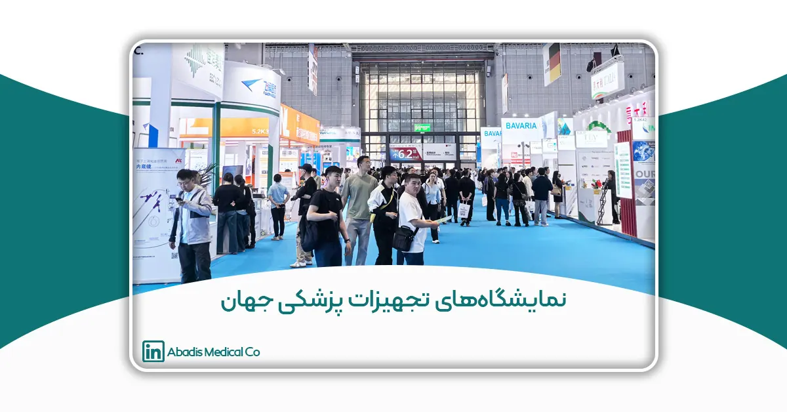

مقدمه
صنعت تجهیزات پزشکی یکی از راهبردیترین و حساسترین صنایع جهان به شمار میرود؛ صنعتی که بهطور مستقیم با سلامت، ایمنی و جان انسانها در ارتباط است و هرگونه نقص در طراحی، تولید یا عملکرد محصولات آن میتواند پیامدهای جبرانناپذیری به همراه داشته باشد. به همین دلیل، این صنعت همواره در خط مقدم نوآوریهای فناورانه، الزامات سختگیرانه کیفی و استانداردهای بینالمللی قرار دارد.
در دهههای اخیر، رشد جمعیت، افزایش میانگین سنی، توسعه خدمات درمانی، گسترش جراحیهای پیشرفته و افزایش آگاهی عمومی نسبت به کیفیت تجهیزات پزشکی، موجب شده است تقاضا برای تجهیزات ایمن، دقیق و استاندارد بهطور چشمگیری افزایش یابد. در چنین شرایطی، تولیدکنندگان تجهیزات پزشکی ناگزیرند همگام با تحولات جهانی حرکت کرده و همواره از آخرین فناوریها، مواد اولیه نوین، قطعات تخصصی و الزامات قانونی بینالمللی آگاهی داشته باشند.
نمایشگاههای بینالمللی تجهیزات پزشکی، بهعنوان یکی از مهمترین ابزارهای توسعه این صنعت، نقش کلیدی در انتقال دانش، معرفی فناوریهای نوظهور و ایجاد ارتباط میان بازیگران اصلی زنجیره تأمین ایفا میکنند. این نمایشگاهها صرفاً محل نمایش محصولات نهایی نیستند، بلکه بستری جامع برای تبادل تجربه میان تولیدکنندگان، تأمینکنندگان مواد و قطعات، مراکز تحقیقاتی، نهادهای استانداردگذار و تصمیمگیران حوزه سلامت محسوب میشوند.
در این رویدادهای تخصصی، جدیدترین دستاوردها در حوزههایی نظیر تجهیزات بیمارستانی، سیستمهای ساکشن و مکش پزشکی، تجهیزات یکبار مصرف، فیلترها و قطعات متخلخل، فناوریهای استریلیزاسیون، طراحی صنعتی تجهیزات پزشکی و استانداردهای بینالمللی مانند ISO، CE و FDA معرفی و بررسی میشود. حضور در چنین نمایشگاههایی یا حتی رصد حرفهای آنها، به تولیدکنندگان کمک میکند تا کیفیت محصولات خود را ارتقا داده، با روندهای آینده بازار همسو شوند و مسیر توسعه پایدار خود را بهدرستی ترسیم کنند.
برای شرکتهای فعال در حوزه تجهیزات پزشکی در ایران، از جمله شرکت مخازن طبی آبادیس، آشنایی با نمایشگاههای معتبر جهانی نهتنها یک مزیت رقابتی، بلکه یک ضرورت استراتژیک به شمار میرود. این نمایشگاهها فرصتی ارزشمند برای مقایسه سطح فناوری داخلی با استانداردهای جهانی، شناسایی فرصتهای صادراتی و تقویت جایگاه برند در بازارهای بینالمللی فراهم میکنند.
در این مقاله، به معرفی جامع مهمترین و معتبرترین نمایشگاههای تجهیزات پزشکی جهان پرداخته میشود و نقش آنها در توسعه فناوری، بهبود کیفیت تولید و رشد بازار تجهیزات پزشکی مورد بررسی قرار میگیرد.
نمایشگاه تجهیزات پزشکی چیست و چرا اهمیت دارد؟
نمایشگاه تجهیزات پزشکی یک رویداد تخصصی و بینالمللی است که در آن تولیدکنندگان، تأمینکنندگان، شرکتهای دانشبنیان، مراکز تحقیق و توسعه، نهادهای نظارتی و فعالان حوزه سلامت گرد هم میآیند تا جدیدترین محصولات، فناوریها و راهکارهای خود را در زمینه تجهیزات پزشکی معرفی کنند. این نمایشگاهها معمولاً طی چند روز برگزار میشوند و طیف گستردهای از تجهیزات، از وسایل یکبار مصرف پزشکی و سیستمهای ساکشن گرفته تا تجهیزات پیشرفته تشخیصی، جراحی و مراقبتهای ویژه را پوشش میدهند.
برخلاف نمایشگاههای عمومی، نمایشگاههای تجهیزات پزشکی ماهیتی کاملاً تخصصی دارند و مخاطبان اصلی آنها پزشکان، مدیران بیمارستانها، مهندسان پزشکی، مدیران تولید، کارشناسان تضمین کیفیت، بازرگانان بینالمللی و نهادهای قانونگذار هستند. به همین دلیل، این نمایشگاهها بهعنوان یکی از معتبرترین بسترهای تبادل دانش فنی و تجاری در صنعت سلامت شناخته میشوند.
اهمیت نمایشگاههای تجهیزات پزشکی
1. معرفی فناوریهای نوین و ترندهای جهانی
نمایشگاههای تجهیزات پزشکی اولین محلی هستند که نوآوریهای صنعت سلامت در آنها معرفی میشود؛ از مواد اولیه و قطعات پیشرفته مانند فیلترهای متخلخل و تجهیزات یکبار مصرف بهینهشده گرفته تا سیستمهای هوشمند و دیجیتال پزشکی. حضور در این نمایشگاهها یا بررسی دستاوردهای آنها به تولیدکنندگان کمک میکند تا با روندهای آینده بازار همگام شوند و استراتژی توسعه محصولات خود را بهروز کنند.
2. ارتقای کیفیت و استانداردهای تولید
در این نمایشگاهها، استانداردهای بینالمللی نظیر ISO 13485، ISO 10993، CE Marking و الزامات FDA بهصورت عملی و کاربردی مورد توجه قرار میگیرند. تولیدکنندگان با مشاهده محصولات رقبا و تبادل تجربه با شرکتهای معتبر جهانی، میتوانند سطح کیفی محصولات خود را ارتقا داده و فرآیندهای تولید را مطابق با الزامات جهانی بهبود دهند.
3. ایجاد ارتباطات تجاری و توسعه بازار
نمایشگاههای تجهیزات پزشکی بستری مهم برای ایجاد ارتباط میان تولیدکنندگان، توزیعکنندگان، نمایندگان فروش و خریداران عمده هستند. بسیاری از همکاریهای تجاری، قراردادهای نمایندگی، پروژههای OEM و فرصتهای صادراتی از دل همین نمایشگاهها شکل میگیرد. برای شرکتهای تولیدکننده داخلی، این رویدادها پلی میان بازار داخلی و بازارهای بینالمللی محسوب میشوند.
4. شناخت نیازهای واقعی بازار و مصرفکنندگان
بازخورد مستقیم پزشکان، پرستاران و مدیران مراکز درمانی در نمایشگاهها، به تولیدکنندگان کمک میکند تا نیازهای واقعی بازار را بهتر درک کنند. این موضوع نقش مهمی در طراحی کاربردیتر تجهیزات پزشکی، بهبود عملکرد محصولات و کاهش خطاهای بالینی دارد.
5. افزایش اعتبار برند و جایگاه حرفهای
حضور فعال در نمایشگاههای معتبر جهانی، نشاندهنده توان فنی، کیفیت تولید و بلوغ سازمانی یک شرکت است. برندهایی که در این رویدادها حضور دارند، از دید فعالان صنعت، قابل اعتمادتر و حرفهایتر تلقی میشوند. این اعتبار نقش مهمی در جلب اعتماد مشتریان، مراکز درمانی و نهادهای نظارتی دارد.
6. تسهیل انتقال دانش و نوآوری
نمایشگاههای تجهیزات پزشکی معمولاً با همایشها، کارگاههای تخصصی و پنلهای علمی همراه هستند. این بخشها فرصتی ارزشمند برای آشنایی با آخرین دستاوردهای علمی، روشهای نوین تولید، مدیریت ریسک، کنترل کیفیت و طراحی تجهیزات پزشکی فراهم میکنند.
نقش نمایشگاهها در توسعه صنعت تجهیزات پزشکی ایران
برای شرکتهای فعال در صنعت تجهیزات پزشکی ایران، نمایشگاههای داخلی و خارجی نقش حیاتی در همسطح شدن با استانداردهای جهانی دارند. این رویدادها به تولیدکنندگان ایرانی کمک میکنند تا ضمن معرفی توانمندیهای خود، فاصله فناوری و کیفیت با برندهای بینالمللی را کاهش داده و مسیر حضور در بازارهای صادراتی را هموار کنند.
اهداف اصلی نمایشگاههای بینالمللی تجهیزات پزشکی
نمایشگاههای بینالمللی تجهیزات پزشکی تنها رویدادهایی برای نمایش محصولات نیستند، بلکه نقش راهبردی در توسعه علمی، فناورانه و اقتصادی صنعت سلامت ایفا میکنند. این نمایشگاهها با گردهم آوردن بازیگران اصلی زنجیره تأمین تجهیزات پزشکی، بستری جامع برای تبادل دانش، توسعه بازار و ارتقای کیفیت محصولات فراهم میسازند. مهمترین اهداف این نمایشگاهها عبارتاند از:
1. معرفی نوآوریها و فناوریهای پیشرفته
یکی از اصلیترین اهداف نمایشگاههای بینالمللی تجهیزات پزشکی، معرفی جدیدترین دستاوردهای فناورانه در حوزه سلامت است. در این رویدادها، فناوریهای نوین در زمینه تجهیزات تشخیصی، درمانی، جراحی، مراقبتهای ویژه، تجهیزات یکبار مصرف پزشکی، سیستمهای ساکشن، فیلترها و قطعات تخصصی معرفی میشوند. این نوآوریها به تولیدکنندگان کمک میکند تا با روندهای جهانی همگام شده و محصولات خود را مطابق با نیازهای آینده بازار توسعه دهند.
2. ارتقای کیفیت و همراستایی با استانداردهای بینالمللی
نمایشگاههای تجهیزات پزشکی نقش مهمی در ترویج استانداردهای بینالمللی مانند ISO 13485، ISO 10993، ISO 14971، CE Marking و الزامات FDA دارند. آشنایی نزدیک با محصولات شرکتهای پیشرو و بررسی الزامات کیفی آنها، به تولیدکنندگان این امکان را میدهد که فرآیندهای طراحی، تولید، استریلیزاسیون و بستهبندی خود را بهبود داده و سطح ایمنی و عملکرد محصولات را ارتقا دهند.
3. توسعه تعاملات تجاری و همکاریهای بینالمللی
ایجاد ارتباط مستقیم میان تولیدکنندگان، تأمینکنندگان مواد اولیه و قطعات، توزیعکنندگان و خریداران عمده، یکی از اهداف کلیدی این نمایشگاههاست. بسیاری از قراردادهای نمایندگی، همکاریهای OEM، پروژههای مشترک تحقیق و توسعه و مسیرهای صادراتی، در بستر این رویدادها شکل میگیرند. برای شرکتهای فعال در بازارهای در حال توسعه، این نمایشگاهها فرصتی ارزشمند برای ورود به بازارهای جهانی محسوب میشوند.
4. شناخت دقیق نیازهای بازار و کاربران نهایی
نمایشگاههای بینالمللی تجهیزات پزشکی امکان دریافت بازخورد مستقیم از پزشکان، پرستاران، مدیران بیمارستانها و مراکز درمانی را فراهم میکنند. این بازخوردها نقش مهمی در بهبود طراحی محصول، افزایش کاربرپسندی تجهیزات و کاهش خطاهای بالینی دارند. شناخت نیازهای واقعی مصرفکنندگان به تولیدکنندگان کمک میکند محصولات کاربردیتر و ایمنتری ارائه دهند.
5. انتقال دانش و توسعه منابع انسانی
برگزاری همایشهای علمی، کارگاههای تخصصی و نشستهای آموزشی در کنار نمایشگاهها، از دیگر اهداف مهم این رویدادهاست. این برنامهها به انتقال دانش روز، معرفی روشهای نوین تولید، مدیریت ریسک، کنترل کیفیت و نوآوری در طراحی تجهیزات پزشکی کمک میکنند و نقش مؤثری در توانمندسازی نیروی انسانی متخصص ایفا مینمایند.
6. افزایش اعتبار برند و جایگاه رقابتی شرکتها
حضور در نمایشگاههای معتبر بینالمللی، نشاندهنده توان فنی، بلوغ سازمانی و تعهد شرکت به کیفیت و ایمنی است. برندهایی که در این نمایشگاهها حضور فعال دارند، در نگاه فعالان صنعت و مراکز درمانی معتبرتر تلقی میشوند. این اعتبار، نقش مهمی در جلب اعتماد مشتریان، توسعه بازار و تثبیت جایگاه رقابتی شرکتها دارد.
7. تسهیل مسیر صادرات و ورود به بازارهای جدید
نمایشگاههای بینالمللی تجهیزات پزشکی به تولیدکنندگان کمک میکنند با الزامات قانونی، استانداردها و نیازهای بازارهای مختلف آشنا شوند. این آگاهی، مسیر اخذ مجوزها، تطبیق محصولات با قوانین کشورهای مقصد و توسعه صادرات را هموار میسازد و ریسکهای ورود به بازارهای جدید را کاهش میدهد.
8. تقویت اکوسیستم نوآوری و صنعت سلامت
در نهایت، این نمایشگاهها با ایجاد ارتباط میان صنعت، دانشگاه، مراکز تحقیقاتی و نهادهای قانونگذار، به تقویت اکوسیستم نوآوری در حوزه تجهیزات پزشکی کمک میکنند. چنین تعاملاتی باعث رشد پایدار صنعت، افزایش سطح فناوری و بهبود کیفیت خدمات درمانی در سطح جهانی میشود.
دستهبندی نمایشگاههای تجهیزات پزشکی جهان
نمایشگاههای تجهیزات پزشکی در سطح جهان، با توجه به گستره محصولات، مخاطبان هدف و حوزه تخصصی، به چند دسته اصلی تقسیم میشوند. این دستهبندی به فعالان صنعت تجهیزات پزشکی کمک میکند تا با شناخت بهتر هر نمایشگاه، مناسبترین رویداد را برای معرفی محصولات، توسعه بازار و ایجاد ارتباطات تخصصی انتخاب کنند.
۱. نمایشگاههای جامع بینالمللی تجهیزات پزشکی
(Comprehensive Medical Exhibitions)
این دسته، بزرگترین و معتبرترین نمایشگاههای تجهیزات پزشکی جهان را شامل میشود که تمامی حوزههای مرتبط با صنعت سلامت را پوشش میدهند؛ از تجهیزات بیمارستانی و تشخیصی گرفته تا ملزومات مصرفی، تجهیزات جراحی، فناوریهای دیجیتال سلامت و خدمات پزشکی.
ویژگیها:
-
گستره وسیع محصولات و فناوریها
-
حضور شرکتهای بینالمللی، برندهای مطرح و استارتاپها
-
مناسب برای معرفی توانمندیهای تولیدی و توسعه صادرات
نمونهها:
MEDICA (آلمان)، Arab Health (امارات)، CMEF (چین)، FIME (آمریکا)
۲. نمایشگاههای تخصصی تجهیزات تشخیصی و آزمایشگاهی
(Diagnostic & Laboratory Exhibitions)
این نمایشگاهها بهطور ویژه بر تجهیزات آزمایشگاهی، تشخیصی و آنالیزهای پزشکی تمرکز دارند. بخش قابل توجهی از محصولات مصرفی و یکبار مصرف آزمایشگاهی نیز در این نمایشگاهها ارائه میشود.
ویژگیها:
-
تمرکز بر دقت، کیفیت و فناوریهای پیشرفته
-
مخاطبان تخصصی شامل آزمایشگاهها و مراکز تحقیقاتی
نمونهها:
MEDLAB (خاورمیانه و اروپا)، Analytica (آلمان)، AACC Clinical Lab Expo (آمریکا)
۳. نمایشگاههای تخصصی تجهیزات بیمارستانی و جراحی
(Hospital & Surgical Equipment Exhibitions)
در این نمایشگاهها تمرکز اصلی بر تجهیزات اتاق عمل، مراقبتهای ویژه (ICU)، اورژانس، بیهوشی و تجهیزات بیمارستانی است. تجهیزات پزشکی مصرفی و یکبار مصرف نیز بهعنوان بخش جداییناپذیر این حوزه حضور پررنگی دارند.
ویژگیها:
-
تمرکز بر کاربردهای بالینی
-
حضور پزشکان، مدیران بیمارستانها و تأمینکنندگان
نمونهها:
Hospitalar (برزیل)، Health Asia (سنگاپور)
۴. بخش تجهیزات پزشکی یکبار مصرف در نمایشگاههای بینالمللی
(Medical Consumables Sections)
اگرچه نمایشگاههای کاملاً مستقل برای تجهیزات پزشکی یکبار مصرف بهصورت گسترده وجود ندارند، اما این محصولات در قالب بخشها و زونهای تخصصی در نمایشگاههای جامع معرفی میشوند. این بخشها شامل انواع فیلترهای پزشکی، ستهای یکبار مصرف، کیسههای ساکشن، محصولات کنترل عفونت و ملزومات مصرفی بیمارستانی هستند.
اهمیت این بخش:
-
نقش حیاتی در ایمنی بیمار و پیشگیری از عفونت
-
تمرکز بر کیفیت، تخلخل، استریلیزاسیون و انطباق با استانداردها
-
فرصت مناسب برای تولیدکنندگان قطعات مصرفی و OEM
۵. نمایشگاههای فناوریهای نوین پزشکی و سلامت دیجیتال
(Medical Technology & Digital Health Exhibitions)
این نمایشگاهها بر فناوریهای نوظهور مانند هوش مصنوعی در پزشکی، تجهیزات هوشمند، تلهمدیسین و سیستمهای دیجیتال سلامت تمرکز دارند و معمولاً همزمان یا در کنار نمایشگاههای جامع برگزار میشوند.
ویژگیها:
-
آیندهمحور و نوآورانه
-
مناسب برای شرکتهای دانشبنیان و فناور
۶. نمایشگاههای منطقهای و بازارمحور
(Regional & Market-focused Exhibitions)
این نمایشگاهها معمولاً در کشورهای در حال توسعه یا بازارهای منطقهای برگزار میشوند و هدف اصلی آنها پاسخ به نیازهای بومی، توسعه شبکه توزیع و آشنایی با ظرفیتهای تولید داخلی است.
ویژگیها:
-
تمرکز بر بازارهای محلی و منطقهای
-
فرصت مناسب برای ورود به بازارهای جدید
بزرگترین و معتبرترین نمایشگاههای تجهیزات پزشکی جهان
در سطح بینالمللی، چند نمایشگاه تجهیزات پزشکی بهعنوان مراجع اصلی صنعت سلامت شناخته میشوند که هر ساله نقش تعیینکنندهای در معرفی فناوریهای نوین، شکلگیری همکاریهای تجاری و جهتدهی به بازار جهانی تجهیزات پزشکی ایفا میکنند. این نمایشگاهها محل تجمع بزرگترین تولیدکنندگان، تأمینکنندگان، فعالان حوزه درمان و تصمیمگیران صنعت سلامت هستند.
در ادامه، مهمترین و معتبرترین نمایشگاههای تجهیزات پزشکی جهان معرفی میشوند:
۱. نمایشگاه MEDICA – آلمان
(دوسلدورف | MEDICA – World Forum for Medicine)
نمایشگاه MEDICA بزرگترین و معتبرترین نمایشگاه تجهیزات پزشکی جهان محسوب میشود و هر ساله در شهر دوسلدورف آلمان برگزار میگردد. این نمایشگاه مرجع اصلی معرفی فناوریهای نوین پزشکی در سطح بینالمللی است.
حوزههای تحت پوشش:
-
تجهیزات بیمارستانی و کلینیکی
-
تجهیزات تشخیصی و آزمایشگاهی
-
ملزومات و تجهیزات پزشکی یکبار مصرف
-
فناوریهای دیجیتال سلامت و هوشمندسازی پزشکی
ویژگی شاخص:
حضور گسترده برندهای جهانی و تمرکز بالا بر استانداردهای بینالمللی و نوآوری
۲. نمایشگاه Arab Health – امارات متحده عربی
(دبی | Arab Health Exhibition)
Arab Health مهمترین نمایشگاه تجهیزات پزشکی خاورمیانه و یکی از بزرگترین رویدادهای پزشکی جهان است که هر ساله در دبی برگزار میشود.
حوزههای تحت پوشش:
-
تجهیزات بیمارستانی و اورژانسی
-
تجهیزات جراحی و مراقبتهای ویژه
-
تجهیزات مصرفی و کنترل عفونت
-
زیرساختهای درمانی و خدمات سلامت
ویژگی شاخص:
پل ارتباطی بین تولیدکنندگان آسیایی، اروپایی و بازار خاورمیانه و آفریقا
۳. نمایشگاه CMEF – چین
(China International Medical Equipment Fair)
نمایشگاه CMEF بزرگترین نمایشگاه تجهیزات پزشکی آسیا و یکی از تأثیرگذارترین نمایشگاههای جهان از نظر حجم تولید و صادرات است.
حوزههای تحت پوشش:
-
تجهیزات پزشکی عمومی و تخصصی
-
قطعات و مواد اولیه تجهیزات پزشکی
-
محصولات مصرفی و یکبار مصرف پزشکی
-
فناوریهای تولید و OEM
ویژگی شاخص:
تمرکز ویژه بر ظرفیتهای تولید صنعتی و زنجیره تأمین تجهیزات پزشکی
۴. نمایشگاه FIME – ایالات متحده آمریکا
(Florida International Medical Expo)
نمایشگاه FIME یکی از مهمترین نمایشگاههای تجهیزات پزشکی قاره آمریکا است که تمرکز آن بر بازار ایالات متحده، آمریکای لاتین و کارائیب میباشد.
حوزههای تحت پوشش:
-
تجهیزات بیمارستانی و کلینیکی
-
ملزومات پزشکی مصرفی
-
تجهیزات تشخیصی و درمانی
ویژگی شاخص:
مناسب برای توسعه صادرات و ورود به بازار آمریکای شمالی و جنوبی
۵. نمایشگاه Hospitalar – برزیل
(Hospitalar – International Healthcare Exhibition)
Hospitalar بزرگترین نمایشگاه تجهیزات پزشکی آمریکای لاتین است و نقش مهمی در تأمین نیازهای درمانی کشورهای این منطقه دارد.
حوزههای تحت پوشش:
-
تجهیزات بیمارستانی
-
تجهیزات جراحی و مراقبتهای ویژه
-
ملزومات مصرفی پزشکی
۶. نمایشگاه MEDLAB – اروپا و خاورمیانه
(MEDLAB Series)
نمایشگاههای MEDLAB بهطور تخصصی بر تجهیزات آزمایشگاهی و تشخیصی تمرکز دارند و در اروپا و خاورمیانه برگزار میشوند.
حوزههای تحت پوشش:
-
تجهیزات آزمایشگاهی
-
کیتها و ملزومات مصرفی آزمایشگاهی
-
فیلترها و قطعات متخلخل پزشکی
۷. نمایشگاه IDS – آلمان (تجهیزات دندانپزشکی)
(International Dental Show)
IDS بزرگترین نمایشگاه تخصصی تجهیزات دندانپزشکی در جهان است که هر دو سال یکبار در آلمان برگزار میشود.
جمعبندی نهایی
نمایشگاههای بینالمللی تجهیزات پزشکی بهعنوان یکی از مهمترین ارکان توسعه صنعت سلامت در جهان، نقشی کلیدی در معرفی فناوریهای نوین، تبادل دانش تخصصی، ارتقای استانداردهای کیفی و گسترش همکاریهای تجاری ایفا میکنند. این رویدادها بستری پویا برای تعامل میان تولیدکنندگان، تأمینکنندگان، متخصصان حوزه درمان، سیاستگذاران و سرمایهگذاران فراهم میسازند و مسیر آینده صنعت تجهیزات پزشکی را تا حد زیادی مشخص میکنند.
حضور یا رصد مستمر نمایشگاههای معتبری همچون MEDICA، Arab Health، CMEF، FIME و Hospitalar به تولیدکنندگان تجهیزات پزشکی این امکان را میدهد تا با آخرین روندهای جهانی، الزامات استانداردهای بینالمللی، نیازهای بازارهای هدف و فناوریهای نوظهور آشنا شوند. این شناخت، بهویژه برای فعالان حوزه تجهیزات مصرفی و یکبار مصرف پزشکی، نقش تعیینکنندهای در بهبود کیفیت محصولات، افزایش ایمنی، کاهش ریسکهای بالینی و ارتقای رقابتپذیری در بازارهای داخلی و خارجی دارد.
از سوی دیگر، نمایشگاههای تجهیزات پزشکی فرصتی ارزشمند برای توسعه صادرات، برندسازی بینالمللی و ایجاد شبکههای همکاری بلندمدت به شمار میروند. شرکتهایی که با نگاه راهبردی به این رویدادها مینگرند، میتوانند ضمن همراستاسازی محصولات خود با نیازهای روز جهان، جایگاه خود را در زنجیره تأمین جهانی تجهیزات پزشکی تثبیت کنند.
در این میان، شرکتهایی نظیر مخازن طبی آبادیس که در حوزه تولید مخازن ساکشن و محصولات مصرفی پزشکی فعالیت دارند، با بهرهگیری از دستاوردها و استانداردهای مطرحشده در نمایشگاههای معتبر جهانی، میتوانند کیفیت، ایمنی و کارایی محصولات خود را ارتقا داده و نقش مؤثرتری در تأمین تجهیزات پزشکی استاندارد و قابل اطمینان ایفا کنند.
در نهایت، میتوان گفت نمایشگاههای تجهیزات پزشکی جهان نهتنها ویترینی برای نمایش محصولات، بلکه موتور محرک نوآوری، بهبود کیفیت خدمات درمانی و ارتقای سلامت جامعه در مقیاس جهانی هستند؛ رویدادهایی که توجه به آنها برای هر فعال حرفهای این صنعت، یک ضرورت راهبردی محسوب میشود.